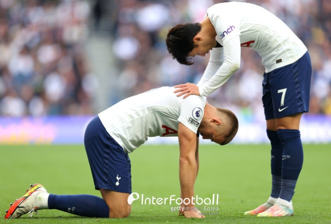

손흥민에게 분노한 다이어...팬들은 "충분히 화낼 수 있는 상황"
인터풋볼 | 프리미어리그
류현진·푸이그 대전에서 재회…비극인가 희극인가 '어쨌든 관심집중'
KBO리그
하루에 2억 8천 사라져도... 슈어저 "난 괜찮다, 야구 위해서라면"
스타뉴스
맨유 충격 결정, '8000만 파운드' 야심작 DF 매각 고려
스포츠조선
"어디까지 발전할지..." 안익수 사로잡은 20살 '대형 수비수'
스타뉴스